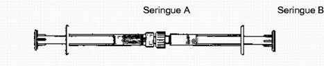
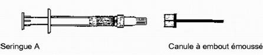

RÉSUMÉ DES CARACTÉRISTIQUES DU PRODUIT
ANSM - Mis à jour le : 09/01/2012
ATRIDOX 44 mg, poudre et solvant pour gel gingival en seringues pré-remplies
2. COMPOSITION QUALITATIVE ET QUANTITATIVE
Doxycycline ...................................................................................................................................... 44 mg
Sous forme d'hyclate de doxycycline
Pour une seringue préremplie B.
Après reconstitution: 502 mg de gel contient 44 mg de doxycycline (8.8 % m/m) sous forme d'hyclate de doxycycline.
Pour la liste complète des excipients, voir rubrique 6.1.
Poudre et solvant pour gel gingival.
Seringue A et seringue B: la seringue A contient un gel incolore, la seringue B contient une poudre jaune.
4.1. Indications thérapeutiques
Pour une utilisation chez l'adulte comme traitement d'appoint au traitement conventionnel non chirurgical de la parodontite chronique, avec profondeur du sillon ≥ 5 mm.
4.2. Posologie et mode d'administration
Voie gingivale
ATRIDOX est indiqué chez les adultes et les personnes âgées.
ATRIDOX n'est pas indiqué chez l'enfant et l'adolescent de moins de 18 ans.
ATRIDOX ne doit être administré que par des professionnels de santé dentaire.
Le produit final mélangé est une formulation de 502 mg contenant 44 mg de doxycycline (8,8 % m/m de doxycycline) et ce matériau permet de traiter jusqu'à seize sites avec des poches de profondeur moyenne de 6 mm.
ATRIDOX est un produit à doser de manière variable en fonction de la taille, de la forme et du nombre de poches parodontales à traiter. ATRIDOX est indiqué pour une utilisation immédiate et chez un seul patient. Des instructions détaillées sur l'administration du produit sont données à la rubrique 6.6.
Après l'introduction à l'aide d'une seringue, si nécessaire, ATRIDOX doit être tassé dans la poche parodontale à l'aide d'un instrument dentaire jusqu'à ce que la poche soit entièrement remplie de matériau coagulé.
Les procédures mécaniques d'hygiène buccale autres que le brossage des surfaces d'occlusion de la dentition et de la langue, devront être évitées sur toutes les zones traitées par ATRIDOX durant les 7 premiers jours après le traitement.
Si nécessaire, une seconde application pourra être effectuée 4 mois plus tard après la première application.
· en cas d'hypersensibilité à l'hyclate de doxycycline et à toute substance active appartenant à la classe des tétracyclines ou à l'un des excipients.
· au cours du développement dentaire.
· au cours de la grossesse et l'allaitement.
· chez les patients pour lesquels un traitement antibiotique prophylactique doit être administré avant un traitement parodontal
· chez les patients ayant un risque de porphyrie aiguë.
· chez les patients souffrant d'insuffisance hépatique sévère.
· chez les enfants et adolescents de moins de 18 ans.
4.4. Mises en garde spéciales et précautions d'emploi
Mises en garde spéciales
Les tétracyclines comme une classe sont connus pour provoquer des réactions de photosensibilité et peuvent entraîner une réaction exagérée au soleil Le traitement doit être arrêté au premier signe d'érythème cutané.
Les données issues des études cliniques n'ont pas permis de justifier l'emploi d'ATRIDOX dans les situations suivantes:
· Patients à risque cardiaque nécessitant une prophylaxie pour une endocardite bactérienne subaiguë (ESP)
· Patients ayant des antécédents de rhumatisme articulaire aigu.
· Patients VIH-positifs et/ou atteints de SIDA
· Patients prenant des médicaments pouvant entraîner une hyperplasie gingivale (notamment, phénytoïne, cyclosporine, etc.) dans le mois qui suit le début du traitement initial.
· Patients immunocompromis, notamment patients recevant une chimiothérapie et/ou une radiothérapie, des immunodépresseurs ainsi que les patients rhumatisants recevant un traitement antirhumatismal tel que corticostéroïdes et anti-inflammatoires non stéroïdiens.
Précautions d'emploi
Les médicaments contenant de la doxycycline devront être administrés avec prudence aux patients souffrant d'une insuffisance hépatique.
Chez les patients souffrant d'une insuffisance rénale, les tétracyclines peuvent s'accumuler et entraîner une hépatotoxicité. Il est peu probable que ces effets se produisent avec ATRIDOX en raison des faibles concentrations plasmatiques en doxycycline.
Chez les patients ayant des antécédents de candidose, la doxycycline peut accroître les risques de candidose buccale.
Comme pour les autres médicaments antibiotiques, l'utilisation de ce médicament peut conduire au développement d'organismes non sensibles, y compris des champignons.
4.5. Interactions avec d'autres médicaments et autres formes d'interactions
L'exposition systémique à la doxycycline après l'administration d'ATRIDOX est très faible. Une interaction systémique est improbable compte tenu de la faible concentration plasmatique en doxycycline (≤ 0,1 µg/ml, voir rubrique 5.2.).
En cas d'association de la doxycycline administrée par voie orale et de rétinoïdes, une hypertension intracrânienne peut survenir. Pour cette raison, cette association doit être évitée.
Une diminution de l'activité de la prothrombine plasmatique a été observée sous l'effet des tétracyclines. Dès lors, la posologie d'anticoagulants des patients sous traitement anticoagulant pourrait être diminuée. Bien que la survenue de ces effets reste improbable avec ATRIDOX en raison de la faible concentration plasmatique en doxycycline, la prudence est requise.
Les résultats d'études chez l'animal montre que les tétracyclines traversent la barrière placentaire, se retrouvent dans les tissus fœtaux et peuvent avoir des effets toxiques sur le développement fœtal (souvent associés à un ralentissement du développement squelettique). Les résultats ont également mis en évidence une embryotoxicité chez l'animal traité à un stade précoce de la gestation. L'utilisation de tétracyclines durant le développement dentaire peut provoquer une dyschromie dentaire permanente.
Dans des études chez l'animal, le N-méthyl-2-pyrrolidone a été associé à une embryotoxicité et une tératogénicité à des doses toxiques pour la mère.
Les tétracyclines sont présentes dans le lait maternel chez la femme prenant ce médicament et ne devront donc pas être utilisées chez la femme allaitante.
Par conséquent, ATRIDOX est contre-indiqué au cours de la grossesse et de l'allaitement (voir rubrique 4.3).
4.7. Effets sur l'aptitude à conduire des véhicules et à utiliser des machines
Sans objet.
Les événements indésirables liés au traitement par ATRIDOX n'ont pas été plus sévères ou plus fréquents que ceux liés aux traitements parodontaux standards. Au cours de 3 essais cliniques de phase III portant sur 609 patients, les événements indésirables ont été rapportés avec les fréquences suivantes:
|
Système d'organe |
Fréquent |
Peu fréquent |
|
|
Infection et infestations |
|
Parodontite aiguë 0,4 %; abcès périapical avec fistule 0,3 %; gingivite aiguë 0,2 %; aphtes buccaux 0,1 %; pulpite 0,1 % |
|
|
Tumeurs bénignes, malignes et non précisées (incluant kystes et polypes) |
|
Tuméfaction, masse ou grosseur au niveau de la tête et du cou 0,1 % |
|
|
Affections du système nerveux |
|
Céphalées 0,3 % |
|
|
Affections gastro-intestinales |
|
Glossodynie 0,3 %; nausées et vomissements 0,3 %; pharyngite aiguë 0,1 %; gastroentérite et colite non infectieuse 0,1 %; stomatite 0,1 % |
|
|
Affections de la peau et du tissu sous-cutané |
|
Troubles de la sensation cutanée 0,2 % |
|
|
Troubles généraux et anomalies au site d'administration |
Douleur gingivale, augmentation de la profondeur du sillon 1,9 %; sensibilité dentaire (thermique) 1,1 % |
Douleur buccale, rougeur, érythème et traumatisme 0,5 %; mal aux dents, sensibilité à la pression 0,3 %; saignements des gencives, ulcération 0,1 % |
L'utilisation d'ATRIDOX induit de très faibles taux sanguins de doxycycline. La survenue de la plupart des complications systémiques dues à la doxycycline est par conséquent improbable. L'expérience après commercialisation montre que l'administration d'ATRIDOX a été rarement (≥ 1/10 000 à <1/1000) associée à des réactions allergiques légères telles que tuméfaction et/ou inflammation du site traité ou rash plus généralisé. Une mélanoglossie (langue noire) a été signalée très rarement (< 1/10 000).
Outre les effets secondaires précités, l'administration orale de tétracycline a été rarement associée aux effets secondaires suivants:
Système gastro-intestinal: anorexie, diarrhée, lésions inflammatoires (avec développement candidosique) dans la région ano-génitale. Une œsophagite et une ulcération œsophagienne ont été rapportées chez des patients ayant reçu de la doxycycline. Une proportion significative de ces cas s'est produite suite à l'administration de chlorhydrate de doxycycline sous forme de gélule. La plupart des patients avaient pris leur médicament juste avant de se coucher.
Une dysphagie a été très rarement rapportée.
Système respiratoire: un enrouement a été très rarement décrit.
Peau: photosensibilité. Dans de très rares cas, lors de traitements par la doxycycline, des réactions cutanées sévères avec réactions mettant en jeu le pronostic vital (dermatite exfoliative, syndrome de Lyell (épidermolyse toxique)) ont été rapportées.
Toxicité rénale: une augmentation de l'urée sanguine a été rapportée avec les tétracyclines et se révèle apparemment dose-dépendante.
Système nerveux central: dans de très rares cas, augmentation de la pression intracrânienne (pseudotumeur cérébrale). Les symptômes sont: maux de tête, nausées, vomissements et troubles de la vision causés par un œdème papillaire.
Autres: des réactions d'hypersensibilité (comprenant urticaire et œdème angioneurotique), péricardite et exacerbation d'un lupus érythémateux systémique ont été rapportées. Des réactions d'hypersensibilité aiguës sévères ont été très rarement signalées, y compris une anaphylaxie et un purpura anaphylactoïde. Les symptômes et les signes cliniques incluent: œdème facial, glossite (langue gonflée) et œdème laryngé conduisant à un rétrécissement des voies respiratoires mettant en jeu le pronostic vital; une tachycardie, une hypotension, un choc et un arrêt cardiaque peuvent se produire dans cette situation.
Sang: une anémie hémolytique, une thrombocytopénie, une neutropénie et une éosinophilie ont été rapportées avec des tétracyclines.
L'examen microscopique a démontré que les tétracyclines provoquent une décoloration brun-noir des tissus thyroïdiens en cas d'administration prolongée. Aucune anomalie de la fonction thyroïdienne n'a été constatée.
Aucun surdosage n'est attendu. En cas de surdosage, retirer ATRIDOX des poches parodontales, procéder le cas échéant à un lavage gastrique et introduire d'autres mesures de soutien.
5. PROPRIETES PHARMACOLOGIQUES
5.1. Propriétés pharmacodynamiques
Classe pharmacothérapeutique: Anti-infectieux pour traitement oral local
Code ATC: A01AB22
La doxycycline est une tétracycline semi-synthétique à large spectre qui est plus lipophile que la tétracycline. La doxycycline est bactériostatique et inhibe la synthèse des protéines bactériennes en interrompant la fixation de l'ARN de transfert et de l'ARN messager sur les sites ribosomaux. Les tests in vitro ont montré que des agents pathogènes parodontaux comme Actinobacillus actinomycetemcomitans, Porphyromonas gingivalis, Prevotella intermedia, Campylobacter rectus, et Fusobacterium nucleatum sont sensibles à 0,06 - 6,0 g/ml de doxycycline. Une étude clinique a démontré qu'un traitement par ATRIDOX chez des patients souffrant de parodontopathie a mené à des taux réduits de Porphyromonas gingivalis, Prevotella intermedia, Campylobacter rectus, Fusobacterium nucleatum, Bacteroides forsythus et Eikenella corrodens au niveau de la plaque sous-gingivale. Les taux de bactéries aérobies ont également été réduits.
|
Sensible |
Concentrations minimales inhibitrices (CMI90) |
|
|
Actinobacillus actinomycetemcomitans |
6 µg/ml |
|
|
Bacteroides forsythus |
< 6 µg/ml |
|
|
Campylobacter rectus |
1 µg/ml |
|
|
Eikenella corrodens |
6 µg/ml |
|
|
Fusobacterium nucleatum |
2 µg/ml |
|
|
Porphyromonas gingivalis |
1 µg/ml |
|
|
Prevotella intermedia |
3 µg/ml |
|
|
Intermédiaire |
Sans objet. |
|
|
Non sensible |
Sans objet. |
Une résistance croisée entre les tétracyclines peut se développer chez les microorganismes et les patients peuvent présenter des réactions de sensibilisation croisée aux tétracyclines.
Les taux de CMI90 in vitro de la doxycycline, rapportées pour les germes pathogènes parodontaux suspectés, sont compris entre 1 et 6 µg/ml. Les taux de CMI90 in vitro les plus élevées atteignent 32 µg/ml. Les concentrations in vivo de la doxycycline sont initialement 30 à 40 fois plus élevées que les concentrations les plus fortes rapportées et sont encore 4 à 10 fois plus élevées le septième jour après le traitement.
Bien que l'activité antibactérienne de la doxycycline soit le principal effet thérapeutique dans le traitement de la parodontite, cette substance présente d'autres propriétés appréciables qui sont susceptibles d'agir sur cette affection.
Celles-ci englobent les propriétés anticollagénases, dont celles dérivées des neutrophiles qui sont les plus sensibles, l'activité anti-inflammatoire et l'inhibition de la résorption osseuse. Ces effets sont de nature à ralentir la progression de la parodontite.
5.2. Propriétés pharmacocinétiques
Les taux de doxycycline retrouvés dans le fluide créviculaire, de la salive et du sérum ont été mesurés à la suite de l'administration soit d'ATRIDOX, soit de doxycycline orale.
Lors du recouvrement d'ATRIDOX par un matériau de rétention, les taux moyens initiaux du fluide créviculaire variaient de 1282 à 1500 µg/ml. Après sept jours, les taux étaient compris entre 152 et 317 µg/ml.
Des études indiquent que ≥ 95 % de la doxycycline sont libérés au cours des premiers dix jours suivant l'application. Approximativement 95 % du polymère seront biorésorbés ou expulsés de façon naturelle de la poche parodontale en 28 jours.
La concentration maximale de doxycycline dans la salive était de 4,05 µg/ml deux heures après le traitement par ATRIDOX et est retombée à 0,36 µg/ml au septième jour.
La concentration sérique de la doxycycline après le traitement par ATRIDOX n'a jamais dépassé 0,1 µg/ml.
5.3. Données de sécurité préclinique
La doxycycline, le NMP (N-méthyl-2-pyrrolidone) et le PLA (poly[DL-lactide]) présentent un faible potentiel de toxicité aiguë, en particulier pour le type d'administration et le dosage considéré (voir rubriques 4.8 et 4.9).
La doxycycline passe la barrière placentaire. De plus, une embryotoxicité a été rapportée mais aucune tératogénicité. A des doses toxiques pour la mère, la NMP a montré des effets embryotoxiques et tératogènes chez la souris et le lapin.
Aucune donnée sur le pouvoir mutagène de la doxycycline et de la PLA n'est disponible. La NMP a fait l'objet d'investigations et les résultats obtenus n'indiquent pas d'effet mutagène.
L'administration sous-gingivale de formulations de doxycycline chez le chien provoque une légère irritation transitoire disparaissant rapidement. Les constituants de la formulation du polymère, de la PLA et de la NMP ainsi que du polymère lui-même, n'ont montré qu'une légère augmentation voire aucune augmentation du potentiel d'irritation.
Poly (DL-lactide), N-méthyl-2 pyrrolidone.
Sans objet.
3 ans dans le sachet.
Après reconstitution: 24 heures dans le sachet refermable.
6.4. Précautions particulières de conservation
A conserver au réfrigérateur (entre 2°C et 8°C) avant et après reconstitution.
6.5. Nature et contenu de l'emballage extérieur
Seringues pré-remplies, jetables et raccordables avec des corps en polypropylène (PP), un collier en PP, des capuchons en polyéthylène (PE) et en PP et des pistons en PP avec des extrémités en caoutchouc thermoplastique naturel. Une boîte contient 1,2 ou 6 sachets contenant chacun, une seringue A pré-remplie (système de délivrance de 450 mg D'ATRIGEL) et une seringue B pré-remplie (44 mg de doxycycline sous forme d'hyclate de doxycycline) et une canule à bout émoussé.
Toutes les tailles de conditionnement peuvent ne pas être commercialisées.
6.6. Précautions particulières d’élimination et de manipulation
Chaque système de seringue d'ATRIDOX est prévu pour une utilisation immédiate et pour un seul et même patient. Ne pas utiliser le produit si le sachet a préalablement été ouvert ou endommagé.
Etape 1. Retirer le produit contenu dans son sachet du réfrigérateur au moins 15 minutes avant le mélange.
Etape 2. Raccorder la seringue A (système de délivrance du liquide) à la seringue B (poudre de doxycycline).

Etape 3. Injecter le contenu liquide de la seringue A (indiqué sur la seringue par une bande de couleur vert foncé bleue) dans la seringue B (poudre de doxycycline) et faire ensuite refluer le contenu dans la seringue A. La totalité de cette opération représente un cycle de mélange.
Etape 4. Exécuter 100 cycles de mélange à un rythme d'un cycle par seconde avec des mouvements énergiques.
Si une utilisation immédiate est souhaitée, passer à l'étape 8.
Etape 5. Les seringues raccordées peuvent au besoin être conservées dans le sachet poche refermable à une température de 2°C à 8°C pendant une durée maximale de 24 heures.
Etape 6. Sortir le produit du réfrigérateur au moins 15 minutes avant l'utilisation.
Etape 7. Exécuter 10 cycles de mélange supplémentaires juste avant l'utilisation.
Continuer avec les instructions se rapportant à une utilisation immédiate.
Etape 8. Le contenu sera dans la seringue A (indiquée par la bande de couleur vert foncé bleue). Maintenir les seringues raccordées en position verticale avec la seringue A en bas. Tirer sur le piston de la seringue A et laisser son contenu s'écouler vers le bas du corps de la seringue pendant plusieurs secondes. Un anneau opaque peut apparaître après la reconstitution. Cependant, si l'on constate la présence de poudre médicamenteuse non mélangée ou une fuite à l'extérieur des corps de seringues, jeter les seringues raccordées.
Etape 9. Séparer les deux seringues et fixer la canule à extrémité émoussée sur la seringue A.

Le produit est maintenant prêt à être appliqué.
Une anesthésie locale n'est pas nécessaire pour la pose d'ATRIDOX. Courber la canule pour qu'elle ressemble à une sonde parodontale et explorer la poche parodontale de la même façon que lors d'un sondage parodontal. En maintenant l'extrémité de la canule à proximité de la base de la poche, injecter le produit dans la poche jusqu'à ce que le polymère atteigne le haut du liseré gingival. Retirer l'extrémité de la canule de la poche.
Afin de séparer l'extrémité de la canule du polymère, tourner l'extrémité de la canule vers la dent et retirer le filet de polymère de l'extrémité de la canule. Des variations de cette technique peuvent s'avérer nécessaire pour obtenir la séparation d'ATRIDOX de la canule.
En cas de nécessité, tasser ATRIDOX dans la poche en utilisant un instrument dentaire approprié. Le fait de plonger le bord de l'instrument dans de l'eau avant de tasser le produit empêchera ATRIDOX de coller à l'instrument et accélérera la coagulation d'ATRIDOX. Quelques gouttes d'eau déposées sur la surface d'ATRIDOX une fois qu'il se trouve dans la poche faciliteront également sa coagulation. Si nécessaire, ajouter une quantité supplémentaire d'ATRIDOX comme décrit ci-dessus, jusqu'à ce que la poche soit pleine. Eliminer tout excès de produit après usage.
7. TITULAIRE DE L’AUTORISATION DE MISE SUR LE MARCHE
TOLMAR GMBH
FELDBERGSTRASSE 27-29
61440 OBERURSEL
ALLEMAGNE
8. NUMERO(S) D’AUTORISATION DE MISE SUR LE MARCHE
· 359 366-7: poudre et solvant pour gel gingival en seringues pré-remplies (Polypropylène). Boîte de 1 sachet.
· 359 367-3: poudre et solvant pour gel gingival en seringues pré-remplies (Polypropylène). Boîte de 2 sachets.
· 354 173-6: poudre et solvant pour gel gingival en seringues pré-remplies (Polypropylène). Boîte de 6 sachets.
9. DATE DE PREMIERE AUTORISATION/DE RENOUVELLEMENT DE L’AUTORISATION
[à compléter par le titulaire]
10. DATE DE MISE A JOUR DU TEXTE
[à compléter par le titulaire]
Sans objet.
12. INSTRUCTIONS POUR LA PREPARATION DES RADIOPHARMACEUTIQUES
Sans objet.
Liste I.
STRICTEMENT RESERVE A L'USAGE PROFESSIONNEL DENTAIRE.